<div class="bg-gray-100 font-sans">
  <!-- Container -->
  <div class="flex h-screen relative">
    <!-- Sidebar -->
    <div class="sidebar w-1/5 lg:block bg-gray-900 text-white p-6 flex flex-col justify-between overflow-auto hide-scroll"
         [ngClass]="{'hidden': !isSidebarVisible, 'lg:block': true}">
      <div>
        <!-- Logo -->
        <div class="flex items-center mb-6">
          <div class="text-2xl font-bold text-green-500">Skill</div>
          <div class="text-2xl font-bold ml-2">GPT</div>
        </div>

        <!-- Conditional Back Button -->
        <div (click)="redirectTo('/landingPage')" *ngIf="isCurrentSubject" class="bg-slate-800 text-white py-2 gap-2 px-4 rounded-lg cursor-pointer mb-2 flex items-center justify-start">
          <!-- (click)="addNewTopic()" this was called before here. in img  -->
          
          <p>Back</p>
        </div>

        <!-- New Topic Button -->
        <div *ngIf="!isCurrentSubject" class="bg-slate-800 text-white py-2 gap-2 px-4 rounded-lg cursor-pointer mb-2 flex items-center justify-start" (click)="redirectTo('/landingPage')">
          
          <p>New Topic</p>
        </div>

        <!-- Navigation -->
        <nav class="space-y-2 overflow-auto " *ngIf="!isCurrentSubject">
          <div class="w-full px-3 py-1 mt-2 hover:bg-slate-800 hover:text-white flex justify-between items-center cursor-pointer rounded-md dark:text-emerald-400"
               *ngFor="let item of booksArray" (click)="selectBook(item)">
            <p class="px-1 py-2 text-base">{{ item.title }}</p>
            
          </div>
        </nav>

        <nav [ngClass]="{'disabled-div': !safeHtml}" class="space-y-2 overflow-auto mb-20" *ngIf="isCurrentSubject">
          <div>
            <div (click)="selectChapter(chapter)" class="w-full px-3 course-item  py-1 mt-2 mb-2 hover:bg-slate-800 custom-border font hover:text-white flex justify-between items-center cursor-pointer rounded-md dark:text-emerald-400"
                 *ngFor="let chapter of bookChapters" [ngClass]="{'activeStatus': isActiveItem(chapter)}">
              <p class="px-1 py-2 ">{{ chapter.chaptertitle}}</p>
              
              <!-- <input type="checkbox" [checked]="chapter.isChapterCompleted" class="border-cyan-50" (click)="markBookAsCompleted(chapter, $event)"/> -->
              <label class="custom-checkbox" (click)="$event.stopPropagation();">
                <input
                  #checkBoxInput
                  type="checkbox"
                  [checked]="chapter.isChapterCompleted"
                  (change)="markBookAsCompleted(chapter, $event)"
                 
                />
                <span class="checkmark"></span>
              </label>
            </div>
          </div>
        </nav>
      </div>

      <!-- User Profile -->
      <div (click)="openModal()" class="fixed bottom-0 left-0 w-1/5 bg-gray-900 p-6 flex items-center space-x-4 cursor-pointer">
        
        <div>
          <div class="text-sm font-semibold">Buy Credits</div>
          <div class="text-xs text-gray-400">Generate more topics and chapters...</div>
        </div>
      </div>
    </div>

    <app-credits-modal *ngIf="isModalOpen" (closeModalEvent)="closeModal()" [remCredits]="receivedCredits"></app-credits-modal>

    <!-- Main Content -->
    <div class="flex-1 flex flex-col bg-white">
      <!-- Mobile Header with Menu Button -->
      <div class="lg:hidden flex items-center justify-between p-2 bg-slate-800 text-white">

        <div class="flex items-center justify-start gap-2">
          <nav  class="navbar">
            <div class="navbar-container">
              <button class="navbar-toggler" (click)="toggleNav()">
                <span *ngIf="!isNavOpen" class="navbar-toggler-icon">&#9776;</span>
                <span *ngIf="isNavOpen" class="navbar-toggler-icon">&#9747;</span>
              </button>
            </div>
            <div  class="sidebar-mobile" [class.active]="isNavOpen">
              <a class="close-btn" (click)="toggleNav()">×</a>
              <div class="overflow-auto px-2">
                <div (click)="redirectTo('/landingPage')" *ngIf="isCurrentSubject" class="bg-slate-800 text-white py-2 gap-2 px-4 rounded-lg cursor-pointer mb-2 flex items-center justify-start">
                  
                  
                  <p>Back</p>
                </div>
                <div   
                
                (click)="selectChapter(chapter)" class="w-full  px-3 py-1 mt-2 hover:bg-slate-600 hover:text-white flex justify-between items-center cursor-pointer rounded-md dark:text-emerald-400"
                     *ngFor="let chapter of bookChapters" [ngClass]="{'activeStatus': isActiveItem(chapter)}">
                  <p class="px-1 py-2 ">{{ chapter.chaptertitle }}</p>
                  <!-- <input type="checkbox" [checked]="chapter.isChapterCompleted" class="border-cyan-50" (click)="markBookAsCompleted(chapter, $event)"> -->
                  <!-- (click)="markBookAsCompleted(chapter,checkBoxInput.checked,$event)" -->
                  <!-- (click)="inputEvent = $event;$event.stopPropagation();" -->
                  <label class="custom-checkbox" >
                    <input
                    #checkBoxInput
                      type="checkbox"
                      [checked]="chapter.isChapterCompleted"
                      (change)="markBookAsCompleted(chapter, $event)"
                      
                    />
                    <span class="checkmark"></span>
                  </label>
                </div>
              </div>
            </div>
            </nav>
          <ul class="breadcrumb flex text-white font-bold m-0">
            <li *ngFor="let item of breadcrumbs; let last = last" [ngClass]="{'active': last}" class="flex">
              <p *ngIf="!last" >{{ item }}</p>
              <span *ngIf="last">{{ item }}</span>
              <span *ngIf="!last">&nbsp;/&nbsp;</span>
            </li>
          </ul>
        </div>

        <div class="user-panel">

          <app-user-panel (buttonClick)="onClickLogout()" (credits)="handleChildEvent($event)"></app-user-panel>
        </div>
        
        <!-- <button (click)="toggleSidebar()" class="p-2 rounded-md focus:outline-none focus:ring-2 focus:ring-white">
          <svg class="w-6 h-6" fill="none" stroke="currentColor" viewBox="0 0 24 24"
               xmlns="http://www.w3.org/2000/svg">
            <path stroke-linecap="round" stroke-linejoin="round" stroke-width="2"
                  d="M4 6h16M4 12h16M4 18h16"></path>
          </svg>
        </button> -->
       
      </div>

      <!-- Header -->
      <div class="hidden min-h-14 lg:flex bg-slate-800 text-white p-3 justify-between items-center">
        <ul class="breadcrumb flex text-white font-bold m-0">
          <li *ngFor="let item of breadcrumbs; let last = last" [ngClass]="{'active': last}" class="flex" >
            <a *ngIf="!last" [href]="">{{ item }}</a>
            <span *ngIf="last">{{ item }}</span>
            <span *ngIf="!last">&nbsp;/&nbsp;</span>
          </li>
        </ul>
        <div class="user-panel">
          <app-user-panel (buttonClick)="onClickLogout()" (credits)="handleChildEvent($event)"></app-user-panel>
        </div>
      </div>

      <!-- Content Area -->
      <div class="flex-1  sm:p-4 lg:p-6 overflow-y-auto" (scroll)="onScroll()" #scrollMe>
        <div class="flex justify-end mb-2 ">
          <button  [disabled]="this.isDownloading" data-twe-toggle="tooltip" title="Download PDF" class="rounded-full bg-emerald-200 p-1 text-slate-800 dark:text-primary-400" (click)="downloadPdf()">
            <svg xmlns="http://www.w3.org/2000/svg" viewBox="0 0 16 16" fill="currentColor" width="18" height="18" class="hover:cursor-pointer">
              <path d="M8.75 2.75a.75.75 0 0 0-1.5 0v5.69L5.03 6.22a.75.75 0 0 0-1.06 1.06l3.5 3.5a.75.75 0 0 0 1.06 0l3.5-3.5a.75.75 0 0 0-1.06-1.06L8.75 8.44V2.75Z" />
              <path d="M3.5 9.75a.75.75 0 0 0-1.5 0v1.5A2.75 2.75 0 0 0 4.75 14h6.5A2.75 2.75 0 0 0 14 11.25v-1.5a.75.75 0 0 0-1.5 0v1.5c0 .69-.56 1.25-1.25 1.25h-6.5c-.69 0-1.25-.56-1.25-1.25v-1.5Z" />
            </svg>  
          </button>                         
        </div>
        <div *ngIf="safeHtml">
          <div *ngFor="let chat of chapterConversation" class="flex flex-col gap-4 py-2">
            <div *ngIf="chat?.gpt" class="flex items-start gap-2 res-background rounded-lg">
              <div class="flex-shrink-0 w-8 h-8 sm:w-10 sm:h-10 rounded-full overflow-hidden border-2 border-white shadow-lg dark:border-gray-600">
                
              </div>
              <div class="res-text rounded-xl shadow-2xl flex-1 dynamic-content text-sm sm:text-base" [innerHTML]="chat?.gpt"></div>
            </div>
            
            <div *ngIf="chat?.user" class="flex items-start gap-2 p-2 sm:p-4 rounded-xl self-end w-fit">
              <div class="text-blue-700 text-end flex-1 rounded-xl shadow-2xl input-text text-sm sm:text-base" [innerHTML]="chat?.user"></div>
              <div class="flex-shrink-0 w-8 h-8 sm:w-10 sm:h-10 rounded-full overflow-hidden bg-gray-100 dark:bg-gray-600">
                
              </div>
            </div>
          </div>
        </div>
        <div *ngIf="!safeHtml" class="flex flex-row gap-3 h-full items-center justify-center">
          <div class="animate-spin inline-block w-8 h-8 sm:w-10 sm:h-10 border-4 border-current border-t-transparent text-slate-800 rounded-full" role="status" aria-label="loading">
            <span class="sr-only">Loading...</span>
          </div>
          <p class="font-bold text-lg sm:text-xl">Just a moment..🫸</p>
        </div>
      </div>
      <app-toaster *ngIf="toastVisible" [message]="toastMessage"></app-toaster>
      
      
      
      

      <!-- Footer / Input -->
      <div class="p-3   border-gray-300 flex items-center "  [ngClass]="{'disabled-div': !safeHtml ||isUserInput}">
        <input [disabled]="!safeHtml ||isUserInput"   [(ngModel)]="userQuery" type="text" [placeholder]="!isUserInput?'Ask a question...(First 20 conversations are free)':typingPlaceHolder" class="flex-1 p-2  border border-gray-300 opacity-100 rounded-xl focus:outline-none focus:ring focus:border-blue-300" (keydown.enter)="userQueryHandler()">
        <button  [ngClass]="{'disabled-div': !userQuery}" class="ml-4 px-4 py-2 bg-slate-800 text-white rounded-md" (click)="userQueryHandler()">Send</button>
        <!-- <div *ngIf="isUserInput"  class="flex flex-1 flex-row gap-3 h-full items-center justify-center">
          <p class="font-bold text-xl">AI is generating....</p>
          
      </div> -->
    </div>
  </div>
</div>
